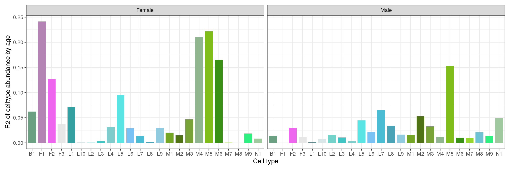
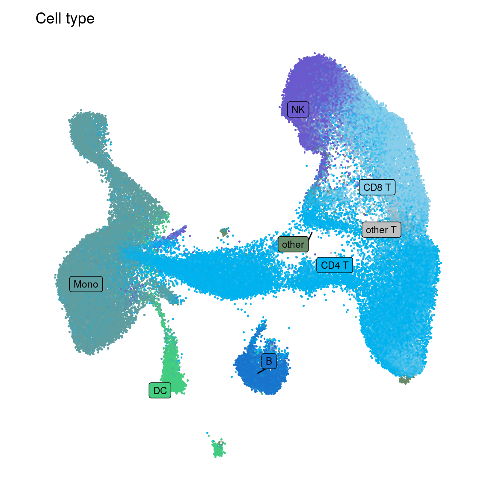
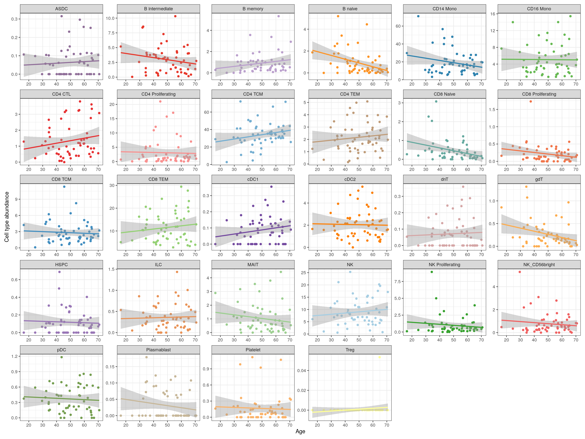
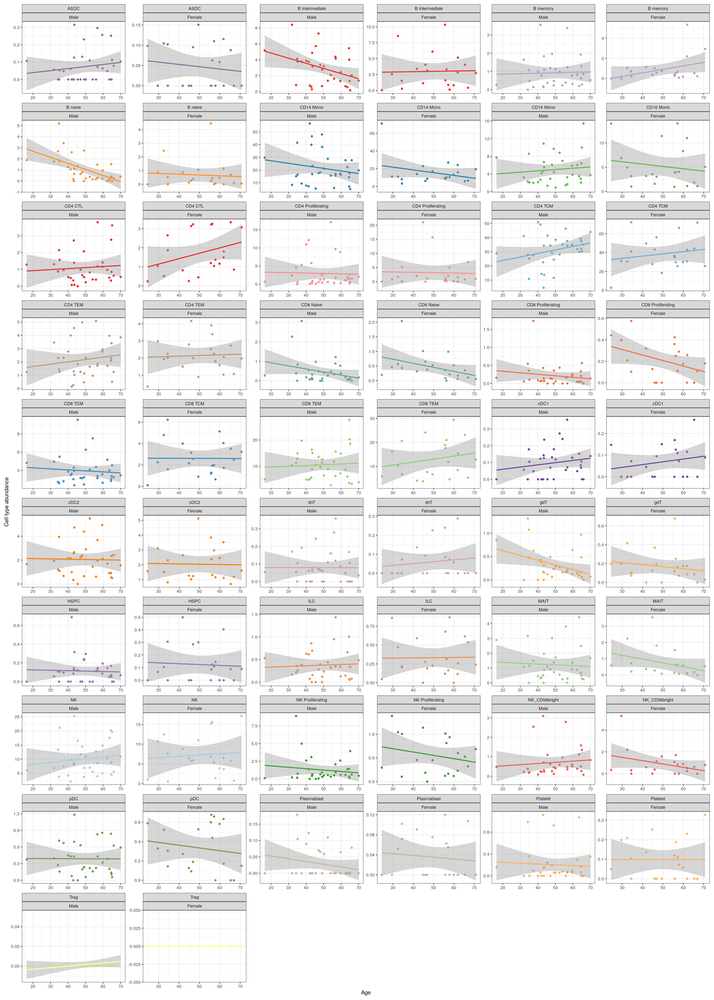

Analysis by age and gender, TME/leukapheresis/CSF/CAR product
heinin
2024-11-13
Last updated: 2025-05-18
Checks: 6 1
Knit directory: GBM_sexdiff/
This reproducible R Markdown analysis was created with workflowr (version 1.7.1). The Checks tab describes the reproducibility checks that were applied when the results were created. The Past versions tab lists the development history.
Great! Since the R Markdown file has been committed to the Git repository, you know the exact version of the code that produced these results.
Great job! The global environment was empty. Objects defined in the global environment can affect the analysis in your R Markdown file in unknown ways. For reproduciblity it’s best to always run the code in an empty environment.
The command set.seed(20240611) was run prior to running
the code in the R Markdown file. Setting a seed ensures that any results
that rely on randomness, e.g. subsampling or permutations, are
reproducible.
Great job! Recording the operating system, R version, and package versions is critical for reproducibility.
Nice! There were no cached chunks for this analysis, so you can be confident that you successfully produced the results during this run.
Using absolute paths to the files within your workflowr project makes it difficult for you and others to run your code on a different machine. Change the absolute path(s) below to the suggested relative path(s) to make your code more reproducible.
| absolute | relative |
|---|---|
| /home/hnatri/GBM_sexdiff/code/CART_plot_functions.R | code/CART_plot_functions.R |
| /home/hnatri/GBM_sexdiff/code/13384_age_sex_themes.R | code/13384_age_sex_themes.R |
| /home/hnatri/GBM_sexdiff/ | . |
| /home/hnatri/GBM_sexdiff/data/13384_demographic_info.csv | data/13384_demographic_info.csv |
Great! You are using Git for version control. Tracking code development and connecting the code version to the results is critical for reproducibility.
The results in this page were generated with repository version 5b16614. See the Past versions tab to see a history of the changes made to the R Markdown and HTML files.
Note that you need to be careful to ensure that all relevant files for
the analysis have been committed to Git prior to generating the results
(you can use wflow_publish or
wflow_git_commit). workflowr only checks the R Markdown
file, but you know if there are other scripts or data files that it
depends on. Below is the status of the Git repository when the results
were generated:
Unstaged changes:
Modified: analysis/index.Rmd
Note that any generated files, e.g. HTML, png, CSS, etc., are not included in this status report because it is ok for generated content to have uncommitted changes.
These are the previous versions of the repository in which changes were
made to the R Markdown (analysis/analyze_by_age.Rmd) and
HTML (docs/analyze_by_age.html) files. If you’ve configured
a remote Git repository (see ?wflow_git_remote), click on
the hyperlinks in the table below to view the files as they were in that
past version.
| File | Version | Author | Date | Message |
|---|---|---|---|---|
| Rmd | 5b16614 | heinin | 2025-05-18 | updated the analysis |
| html | 5b16614 | heinin | 2025-05-18 | updated the analysis |
Analysis of cell type proportions and gene expression by age and gender
Libraries, helper functions, and environment variables
library(workflowr)
library(Seurat)
library(googlesheets4)
library(dplyr)
library(tidyverse)
library(ggrepel)
library(patchwork)
library(ggcorrplot)
source("/home/hnatri/GBM_sexdiff/code/CART_plot_functions.R")
source("/home/hnatri/GBM_sexdiff/code/13384_age_sex_themes.R")
setwd("/home/hnatri/GBM_sexdiff/")
set.seed(1234)
options(future.globals.maxSize = 30000 * 1024^2)
reduction <- "integrated_sct_umap"Import data
immune_fibro <- readRDS("/tgen_labs/banovich/BCTCSF/Heini/13384_Tumor/tumor_immune_fibroblast_reclustered_DoubletFinder.rds")
leukPBMC <- readRDS("/tgen_labs/banovich/BCTCSF/Heini/13384_leukPBMC/CITE_nonCITE_leukPBMC_integrated_merged_AzimuthAnnot.rds")
#CSF <- readRDS("/tgen_labs/banovich/BCTCSF/Heini/13384_CSF_PBMC/13384_csf_integrated_TCR.rds")
object_list <- list("immune_fibro" = immune_fibro,
"leukPBMC" = leukPBMC)
#"CSF" = CSF)
# Adding demographic info and IDH status
demographics <- read.csv("/home/hnatri/GBM_sexdiff/data/13384_demographic_info.csv",
row.names = 1)
gs4_deauth()
idh_info <- gs4_get("https://docs.google.com/spreadsheets/d/1ApwXjEVtpPB87al6q3ab8TKvZYJTh3iNH1cuO-A_OoU/edit?usp=sharing")
idh_info <- read_sheet(idh_info, sheet = "Clinical info")
object_list <- lapply(object_list, function(xx){
xx$Gender <- mapvalues(x = xx$UPN,
from = demographics$UPN,
to = demographics$GENDER)
xx$Age <- mapvalues(x = xx$UPN,
from = demographics$UPN,
to = demographics$Age)
xx$Race <- mapvalues(x = xx$UPN,
from = demographics$UPN,
to = demographics$RACE_STD)
xx$Ethnicity <- mapvalues(x = xx$UPN,
from = demographics$UPN,
to = demographics$ETHNICITY_STD)
xx@meta.data$IDH <- mapvalues(xx$UPN,
from = idh_info$UPN,
to = idh_info$idh_mutated) %>%
unlist() %>%
as.numeric()
xx@meta.data$IDH[-which(xx@meta.data$UPN %in% idh_info$UPN)] <- NA
xx$IDH <- gsub(0, "N", xx$IDH)
xx$IDH <- gsub(1, "Y", xx$IDH)
xx
})
# No demographic info for 208?
object_list[["leukPBMC"]] <- subset(object_list[["leukPBMC"]], subset = UPN %in% c(208), invert = T)
# Numbers of samples by group
n_samples <- object_list[["immune_fibro"]]@meta.data %>%
dplyr::select(UPN, Gender, CD3_high_low, binary_response, IDH) %>%
distinct()
table(n_samples$Gender)
Female Male
13 28 table(n_samples$Gender, n_samples$IDH)
N Y
Female 5 6
Male 15 9table(n_samples$Gender, n_samples$binary_response)
CR_SD PD
Female 4 9
Male 14 14table(n_samples$IDH, n_samples$binary_response)
CR_SD PD
N 8 12
Y 8 7TME (immune cells + fibroblasts)
Cell type proportions by age
# Linear regression by celltype, not stratifying by gender
prop_table <- as.data.frame(table(as.character(object_list[["immune_fibro"]]$UPN), object_list[["immune_fibro"]]$celltype))
colnames(prop_table) <- c("UPN", "celltype", "Freq")
prop_table <- spread(prop_table, celltype, Freq)
prop_table[,2:length(prop_table)] <- (prop_table[,2:length(prop_table)]/rowSums(prop_table[,2:length(prop_table)]))*100
prop_table <- gather(prop_table, celltype, Freq, names(prop_table)[2:length(names(prop_table))], factor_key=TRUE)
prop_table$Age <- mapvalues(x = prop_table$UPN,
from = demographics$UPN,
to = demographics$Age)
prop_table$Age <- as.numeric(as.character(prop_table$Age))
prop_table$Gender <- mapvalues(x = prop_table$UPN,
from = demographics$UPN,
to = demographics$GENDER)
ct_prop_res <- as.data.frame(matrix(NA, nrow = length(unique(prop_table$celltype)),
ncol = 3))
colnames(ct_prop_res) <- c("celltype", "R2", "p")
ct_prop_res$celltype <- sort(unique(prop_table$celltype))
for(ct in unique(ct_prop_res$celltype)){
data_subset <- prop_table %>% filter(celltype == ct)
#if(nrow(data_subset)<2){
# next
#} else {
lm_res <- lm(Freq~Age, data = data_subset)
pval <- summary(lm_res)$coefficients[,4][2]
r2 <- summary(lm_res)$r.squared
ct_prop_res[which(ct_prop_res$celltype == ct),]$R2 <- r2
ct_prop_res[which(ct_prop_res$celltype == ct),]$p <- as.numeric(pval)
}
ct_prop_res celltype R2 p
1 B1 0.0200638608 0.3770200
2 F1 0.0195352960 0.3834435
3 F2 0.0330060482 0.2556185
4 F3 0.0048816210 0.6642353
5 L1 0.0052787765 0.6516793
6 L10 0.0041971354 0.6873728
7 L2 0.0076813321 0.5858321
8 L3 0.0046934853 0.6703947
9 L4 0.0057262418 0.6381925
10 L5 0.0015149680 0.8090822
11 L6 0.0067355589 0.6099690
12 L7 0.0200498086 0.3771889
13 L8 0.0002912472 0.9156587
14 L9 0.0083236996 0.5705078
15 M1 0.0046353259 0.6723281
16 M2 0.0128282349 0.4807634
17 M3 0.0048598399 0.6649412
18 M4 0.0433098887 0.1916560
19 M5 0.0435784648 0.1902535
20 M6 0.0119835594 0.4956681
21 M7 0.0100656982 0.5325465
22 M8 0.0199776692 0.3780573
23 M9 0.0053058018 0.6508456
24 N1 0.0283773234 0.2924178ct_prop_res %>% dplyr::select(c("celltype", "R2")) %>%
ggplot(aes(x = celltype, y = R2, fill = celltype)) +
geom_bar(stat="identity", position='stack', width = 0.8) +
scale_fill_manual(name = "celltype", values = immune_fibro_celltype_col) +
theme_bw() +
xlab("Cell type") +
ylab("R2 of celltype abundance by age") +
theme(legend.position = "none") +
theme(panel.background = element_rect(colour = "gray88")) +
theme(plot.margin = margin(0.3, 0.3, 0.3,0.3, "cm"))
| Version | Author | Date |
|---|---|---|
| 5b16614 | heinin | 2025-05-18 |
Plotting cell type proportions by age
prop_table %>%
ggplot(aes(x = Age, y = Freq, color = celltype)) +
geom_point() +
scale_color_manual(name = "celltype", values = immune_fibro_celltype_col) +
theme_bw() +
xlab("Age") +
ylab("Cell type abundance") +
theme(legend.position = "none") +
theme(panel.background = element_rect(colour = "gray88")) +
theme(plot.margin = margin(0.3, 0.3, 0.3,0.3, "cm")) +
geom_smooth(method = "lm", se = T, formula = y ~ x) +
facet_wrap(~celltype, scales = "free")
| Version | Author | Date |
|---|---|---|
| 5b16614 | heinin | 2025-05-18 |
Cell type proportions by gender and age
# Linear regression by celltype
ct_prop_res_gender <- as.data.frame(matrix(NA, nrow = 2*length(unique(prop_table$celltype)),
ncol = 4))
colnames(ct_prop_res_gender) <- c("gender", "celltype", "R2", "p")
ct_prop_res_gender$celltype <- rep(sort(unique(prop_table$celltype)), 2)
ct_prop_res_gender$gender <- c(rep(c("Male"), length(unique(prop_table$celltype))),
rep(c("Female"), length(unique(prop_table$celltype))))
for(ct in unique(ct_prop_res_gender$celltype)){
for(gender in c("Male", "Female")){
data_subset <- prop_table %>% filter(celltype == ct,
Gender == gender)
#if(nrow(data_subset)<2){
# next
#} else {
lm_res <- lm(Freq~Age, data = data_subset)
pval <- summary(lm_res)$coefficients[,4][2]
r2 <- summary(lm_res)$r.squared
ct_prop_res_gender[which(ct_prop_res_gender$celltype == ct & ct_prop_res_gender$gender == gender),]$R2 <- r2
ct_prop_res_gender[which(ct_prop_res_gender$celltype == ct & ct_prop_res_gender$gender == gender),]$p <- as.numeric(pval)
}
}
ct_prop_res_gender gender celltype R2 p
1 Male B1 0.0143949651 0.54310294
2 Male F1 0.0000563169 0.96976755
3 Male F2 0.0303042843 0.37564660
4 Male F3 0.0115283957 0.58656285
5 Male L1 0.0011429562 0.86439238
6 Male L10 0.0070799323 0.67032919
7 Male L2 0.0159754272 0.52158800
8 Male L3 0.0107407013 0.59971423
9 Male L4 0.0039079114 0.75198956
10 Male L5 0.0446570483 0.28037415
11 Male L6 0.0219963048 0.45133533
12 Male L7 0.0649938708 0.19044483
13 Male L8 0.0341852411 0.34623913
14 Male L9 0.0165088617 0.51465919
15 Male M1 0.0161648169 0.51910978
16 Male M2 0.0530359258 0.23840668
17 Male M3 0.0328614194 0.35591548
18 Male M4 0.0120550554 0.57808710
19 Male M5 0.1528368304 0.03968183
20 Male M6 0.0103262014 0.60688060
21 Male M7 0.0100822311 0.61118315
22 Male M8 0.0207064021 0.46506496
23 Male M9 0.0138810057 0.55044425
24 Male N1 0.0493813538 0.25572874
25 Female B1 0.0620255079 0.41191382
26 Female F1 0.2415687332 0.08804693
27 Female F2 0.1263208524 0.23335442
28 Female F3 0.0367374956 0.53046052
29 Female L1 0.0716157877 0.37672547
30 Female L10 0.0023636036 0.87467774
31 Female L2 0.0004816841 0.94326554
32 Female L3 0.0033439881 0.85115451
33 Female L4 0.0314329562 0.56228391
34 Female L5 0.0954594141 0.30434666
35 Female L6 0.0286623933 0.58031110
36 Female L7 0.0144176240 0.69599890
37 Female L8 0.0017935990 0.89073667
38 Female L9 0.0298890344 0.57219825
39 Female M1 0.0204927902 0.64081895
40 Female M2 0.0150779363 0.68942037
41 Female M3 0.0466841828 0.47833540
42 Female M4 0.2100695406 0.11522121
43 Female M5 0.2220862054 0.10403624
44 Female M6 0.1651169712 0.16826246
45 Female M7 0.0004869498 0.94295672
46 Female M8 NaN NaN
47 Female M9 0.0185409986 0.65736184
48 Female N1 0.0086082555 0.76305699ct_prop_res_gender %>% dplyr::select(c("celltype", "R2", "gender")) %>%
pivot_wider(values_from = "R2", names_from = "gender") %>%
ggplot(aes(x = Male, y = Female, color = celltype, label = celltype)) +
geom_point() +
scale_color_manual(name = "celltype", values = immune_fibro_celltype_col) +
theme_bw() +
xlab("R2 of cell type abundance correlation with with age, male") +
ylab("R2 of cell type abundance correlation with with age, female") +
geom_text_repel(size = 2.5) +
theme(legend.position = "none") +
geom_abline(intercept = 0, slope = 1, linewidth = 0.5, linetype = "dashed") +
theme(panel.background = element_rect(colour = "gray88")) +
theme(plot.margin = margin(0.3, 0.3, 0.3,0.3, "cm"))
| Version | Author | Date |
|---|---|---|
| 5b16614 | heinin | 2025-05-18 |
ct_prop_res_gender %>% dplyr::select(c("celltype", "R2", "gender")) %>%
ggplot(aes(x = celltype, y = R2, fill = celltype)) +
geom_bar(stat="identity", position='stack', width = 0.8) +
scale_fill_manual(name = "celltype", values = immune_fibro_celltype_col) +
theme_bw() +
xlab("Cell type") +
ylab("R2 of celltype abundance by age") +
theme(legend.position = "none") +
theme(panel.background = element_rect(colour = "gray88")) +
theme(plot.margin = margin(0.3, 0.3, 0.3,0.3, "cm")) +
facet_wrap(~gender, scales = "fixed")
| Version | Author | Date |
|---|---|---|
| 5b16614 | heinin | 2025-05-18 |
Plotting cell type proportions by age and gender
prop_table %>%
ggplot(aes(x = Age, y = Freq, color = celltype)) +
geom_point() +
scale_color_manual(name = "celltype", values = immune_fibro_celltype_col) +
theme_bw() +
xlab("Age") +
ylab("Cell type abundance") +
theme(legend.position = "none") +
theme(panel.background = element_rect(colour = "gray88")) +
theme(plot.margin = margin(0.3, 0.3, 0.3,0.3, "cm")) +
geom_smooth(method = "lm", se = T, formula = y ~ x) +
facet_wrap(~celltype+Gender, scales = "free", ncol = 6)
| Version | Author | Date |
|---|---|---|
| 5b16614 | heinin | 2025-05-18 |
Multiple variate regression by age and gender
prop_table$Gender_num <- ifelse(prop_table$Gender == "Male", 1,
ifelse(prop_table$Gender == "Female", 0, NA))
ct_prop_res_multivar <- as.data.frame(matrix(NA, nrow = length(unique(prop_table$celltype)),
ncol = 5))
colnames(ct_prop_res_multivar) <- c("celltype", "R2", "pval_intercept", "pval_age", "pval_gender")
ct_prop_res_multivar$celltype <- sort(unique(prop_table$celltype))
for(ct in unique(ct_prop_res_multivar$celltype)){
data_subset <- prop_table %>% filter(celltype == ct)
#if(nrow(data_subset)<2){
# next
#} else {
lm_res <- lm(Freq ~ Age + Gender_num, data = data_subset)
pval_intercept <- summary(lm_res)$coefficients[,4][1]
pval_age <- summary(lm_res)$coefficients[,4][2]
pval_gender <- summary(lm_res)$coefficients[,4][3]
r2 <- summary(lm_res)$r.squared
ct_prop_res_multivar[which(ct_prop_res_multivar$celltype == ct),]$R2 <- r2
ct_prop_res_multivar[which(ct_prop_res_multivar$celltype == ct),]$pval_intercept <- as.numeric(pval_intercept)
ct_prop_res_multivar[which(ct_prop_res_multivar$celltype == ct),]$pval_age <- as.numeric(pval_age)
ct_prop_res_multivar[which(ct_prop_res_multivar$celltype == ct),]$pval_gender <- as.numeric(pval_gender)
}
ct_prop_res_multivar %>%
arrange(pval_intercept)# %>% filter(pval_intercept < 0.1) celltype R2 pval_intercept pval_age pval_gender
1 M4 0.053282951 0.005088894 0.1681624 0.53072044
2 M2 0.021327029 0.032513689 0.4338463 0.56904919
3 M5 0.044705038 0.034235299 0.2141045 0.83347929
4 M3 0.095360093 0.034747298 0.9025310 0.05861328
5 B1 0.021711480 0.055574034 0.3672685 0.80164703
6 M1 0.048884171 0.067562297 0.8389606 0.19157192
7 L5 0.064166873 0.070142921 0.9848923 0.11899758
8 L3 0.017271089 0.163073631 0.5954670 0.48980569
9 N1 0.126334866 0.174076317 0.4552210 0.04588085
10 L8 0.049568702 0.231425394 0.7368763 0.16854593
11 M9 0.007846290 0.309890609 0.6964973 0.75679682
12 L6 0.008179854 0.351272468 0.6466293 0.81528885
13 L1 0.047351804 0.495627515 0.8128504 0.20297285
14 M8 0.037452981 0.499631982 0.4647149 0.41138656
15 L9 0.021368177 0.554505119 0.5016643 0.48099867
16 M6 0.031409123 0.562294556 0.4170200 0.38815273
17 M7 0.019763011 0.626101325 0.6097339 0.54344352
18 F2 0.041192870 0.637875332 0.2291753 0.57228893
19 F1 0.019583080 0.660404788 0.3923061 0.96589866
20 L4 0.044069238 0.673579027 0.7913351 0.22456451
21 L2 0.014935262 0.699706200 0.5361557 0.59989015
22 L7 0.023065788 0.782540191 0.3594802 0.73385444
23 F3 0.045831679 0.790540341 0.5221831 0.20933434
24 L10 0.008407504 0.996587548 0.6467594 0.69016638# Data for a correlation plot
prop_table_corr <- prop_table %>%
pivot_wider(names_from = celltype, values_from = Freq) %>%
dplyr::select(-c("UPN", "Gender"))
# Compute correlation at 2 decimal places
corr_matrix <- round(cor(prop_table_corr), 2)
# Plot
ggcorrplot(corr_matrix, hc.order = TRUE, type = "lower",
lab = TRUE, lab_size = 3)
| Version | Author | Date |
|---|---|---|
| 5b16614 | heinin | 2025-05-18 |
plot_cts <- ct_prop_res_multivar %>% filter(pval_intercept < 0.1) %>%
dplyr::select(celltype) %>%
unlist()
prop_table %>%
filter(celltype %in% plot_cts) %>%
ggplot(aes(x = Age, y = Freq, color = celltype)) +
geom_point() +
scale_color_manual(name = "celltype", values = immune_fibro_celltype_col) +
theme_bw() +
xlab("Age") +
ylab("Cell type abundance") +
theme(legend.position = "none") +
theme(panel.background = element_rect(colour = "gray88")) +
theme(plot.margin = margin(0.3, 0.3, 0.3,0.3, "cm")) +
geom_smooth(method = "lm", se = T, formula = y ~ x) +
facet_wrap(~celltype+Gender, scales = "free", ncol = 4)
| Version | Author | Date |
|---|---|---|
| 5b16614 | heinin | 2025-05-18 |
Leukapheresis PBMCs
DimPlot(leukPBMC,
group.by = "celltype.l1",
cols = leukPBMC_celltype_1_col,
reduction = "wnn.umap",
label = T,
label.box = T,
label.size = 3,
repel = T,
raster = T,
raster.dpi = c(1024, 1024),
pt.size = 3) +
ggtitle("Cell type") +
theme_classic() +
NoLegend() +
NoAxes() +
coord_fixed(1)
| Version | Author | Date |
|---|---|---|
| 5b16614 | heinin | 2025-05-18 |
DimPlot(leukPBMC,
group.by = "celltype.l2",
cols = leukPBMC_celltype_2_col,
reduction = "wnn.umap",
label = T,
label.box = T,
label.size = 3,
repel = T,
raster = T,
raster.dpi = c(1024, 1024),
pt.size = 3) +
ggtitle("Cell type") +
theme_classic() +
NoLegend() +
NoAxes() +
coord_fixed(1)
| Version | Author | Date |
|---|---|---|
| 5b16614 | heinin | 2025-05-18 |
DimPlot(leukPBMC,
group.by = "celltype.l3",
#cols = leukPBMC_celltype_col,
reduction = "wnn.umap",
label = T,
label.box = T,
label.size = 3,
repel = T,
raster = T,
raster.dpi = c(1024, 1024),
pt.size = 3) +
ggtitle("Cell type") +
theme_classic() +
NoLegend() +
NoAxes() +
coord_fixed(1)
| Version | Author | Date |
|---|---|---|
| 5b16614 | heinin | 2025-05-18 |
Cell numbers by cell type
table(leukPBMC$celltype.l2) %>%
as.data.frame() %>%
ggplot(aes(x = reorder(Var1, -Freq), y = Freq)) +
geom_bar(stat = "identity") +
theme_minimal() +
RotatedAxis() +
xlab("Cell type (l2)") +
ylab("# cells")
| Version | Author | Date |
|---|---|---|
| 5b16614 | heinin | 2025-05-18 |
Only analyzing cell types with >10 samples with >10 cells
Cell type proportions by age
# Linear regression by celltype, not stratifying by gender
prop_table <- as.data.frame(table(as.character(object_list[["leukPBMC"]]$UPN), object_list[["leukPBMC"]]$celltype.l2))
colnames(prop_table) <- c("UPN", "celltype", "Freq")
prop_table <- spread(prop_table, celltype, Freq)
prop_table[,2:length(prop_table)] <- (prop_table[,2:length(prop_table)]/rowSums(prop_table[,2:length(prop_table)]))*100
prop_table <- gather(prop_table, celltype, Freq, names(prop_table)[2:length(names(prop_table))], factor_key=TRUE)
prop_table$Age <- mapvalues(x = prop_table$UPN,
from = demographics$UPN,
to = demographics$Age)
prop_table$Age <- as.numeric(as.character(prop_table$Age))
prop_table$Gender <- mapvalues(x = prop_table$UPN,
from = demographics$UPN,
to = demographics$GENDER)
ct_prop_res <- as.data.frame(matrix(NA, nrow = length(unique(prop_table$celltype)),
ncol = 3))
colnames(ct_prop_res) <- c("celltype", "R2", "p")
ct_prop_res$celltype <- sort(unique(prop_table$celltype))
for(ct in unique(ct_prop_res$celltype)){
data_subset <- prop_table %>% filter(celltype == ct)
#if(nrow(data_subset)<2){
# next
#} else {
lm_res <- lm(Freq~Age, data = data_subset)
pval <- summary(lm_res)$coefficients[,4][2]
r2 <- summary(lm_res)$r.squared
ct_prop_res[which(ct_prop_res$celltype == ct),]$R2 <- r2
ct_prop_res[which(ct_prop_res$celltype == ct),]$p <- as.numeric(pval)
}
ct_prop_res celltype R2 p
1 ASDC 4.470601e-03 0.627662260
2 B intermediate 3.708104e-02 0.158978492
3 B memory 3.837494e-02 0.151755419
4 B naive 1.470493e-01 0.003853181
5 CD14 Mono 5.166645e-02 0.095131958
6 CD16 Mono 9.740745e-05 0.942988013
7 CD4 CTL 3.506894e-02 0.170981616
8 CD4 Proliferating 9.061606e-04 0.827298370
9 CD4 TCM 4.929348e-02 0.103283553
10 CD4 TEM 1.537641e-02 0.367064199
11 CD8 Naive 1.057002e-01 0.015437996
12 CD8 Proliferating 4.781292e-02 0.108743434
13 CD8 TCM 4.074480e-03 0.643373219
14 CD8 TEM 1.791835e-02 0.329897488
15 cDC1 3.634914e-02 0.163232494
16 cDC2 5.543560e-04 0.864518171
17 dnT 2.933261e-03 0.694525489
18 gdT 9.362483e-02 0.023093080
19 HSPC 2.342862e-03 0.725642442
20 ILC 1.415581e-03 0.785071423
21 MAIT 2.441810e-02 0.254588862
22 NK 1.240369e-02 0.418223252
23 NK Proliferating 1.634301e-02 0.352302332
24 NK_CD56bright 1.483060e-02 0.375773726
25 pDC 3.657046e-03 0.660962847
26 Plasmablast 2.977991e-02 0.207711227
27 Platelet 1.993823e-03 0.746161160
28 Treg 2.654835e-02 0.234605663ct_prop_res %>% dplyr::select(c("celltype", "R2")) %>%
ggplot(aes(x = celltype, y = R2, fill = celltype)) +
geom_bar(stat="identity", position='stack', width = 0.8) +
scale_fill_manual(name = "celltype", values = leukPBMC_celltype_2_col) +
theme_bw() +
xlab("Cell type") +
ylab("R2 of celltype abundance by age") +
theme(legend.position = "none") +
theme(panel.background = element_rect(colour = "gray88")) +
theme(plot.margin = margin(0.3, 0.3, 0.3,0.3, "cm")) +
RotatedAxis()
| Version | Author | Date |
|---|---|---|
| 5b16614 | heinin | 2025-05-18 |
Plotting cell type proportions by age
prop_table %>%
ggplot(aes(x = Age, y = Freq, color = celltype)) +
geom_point() +
scale_color_manual(name = "celltype", values = leukPBMC_celltype_2_col) +
theme_bw() +
xlab("Age") +
ylab("Cell type abundance") +
theme(legend.position = "none") +
theme(panel.background = element_rect(colour = "gray88")) +
theme(plot.margin = margin(0.3, 0.3, 0.3,0.3, "cm")) +
geom_smooth(method = "lm", se = T, formula = y ~ x) +
facet_wrap(~celltype, scales = "free")
| Version | Author | Date |
|---|---|---|
| 5b16614 | heinin | 2025-05-18 |
Cell type proportions by gender and age
# Linear regression by celltype
ct_prop_res_gender <- as.data.frame(matrix(NA, nrow = 2*length(unique(prop_table$celltype)),
ncol = 4))
colnames(ct_prop_res_gender) <- c("gender", "celltype", "R2", "p")
ct_prop_res_gender$celltype <- rep(sort(unique(prop_table$celltype)), 2)
ct_prop_res_gender$gender <- c(rep(c("Male"), length(unique(prop_table$celltype))),
rep(c("Female"), length(unique(prop_table$celltype))))
for(ct in unique(ct_prop_res_gender$celltype)){
for(gender in c("Male", "Female")){
data_subset <- prop_table %>% filter(celltype == ct,
Gender == gender)
#if(nrow(data_subset)<2){
# next
#} else {
lm_res <- lm(Freq~Age, data = data_subset)
pval <- summary(lm_res)$coefficients[,4][2]
r2 <- summary(lm_res)$r.squared
ct_prop_res_gender[which(ct_prop_res_gender$celltype == ct & ct_prop_res_gender$gender == gender),]$R2 <- r2
ct_prop_res_gender[which(ct_prop_res_gender$celltype == ct & ct_prop_res_gender$gender == gender),]$p <- as.numeric(pval)
}
}
ct_prop_res_gender gender celltype R2 p
1 Male ASDC 2.344839e-02 0.387256420
2 Male B intermediate 1.481290e-01 0.024600470
3 Male B memory 1.085576e-03 0.853242638
4 Male B naive 3.268509e-01 0.000412343
5 Male CD14 Mono 3.438830e-02 0.293721462
6 Male CD16 Mono 1.202004e-02 0.537079521
7 Male CD4 CTL 6.264427e-03 0.656358992
8 Male CD4 Proliferating 9.160342e-04 0.865074987
9 Male CD4 TCM 7.833718e-02 0.108891257
10 Male CD4 TEM 2.577919e-02 0.364354915
11 Male CD8 Naive 8.923737e-02 0.086136588
12 Male CD8 Proliferating 2.763690e-02 0.347391549
13 Male CD8 TCM 8.366115e-03 0.606924740
14 Male CD8 TEM 4.069778e-03 0.720016966
15 Male cDC1 3.287192e-02 0.304806615
16 Male cDC2 5.215845e-04 0.897987496
17 Male dnT 2.523678e-06 0.992885667
18 Male gdT 1.449382e-01 0.026333924
19 Male HSPC 1.645802e-03 0.819802937
20 Male ILC 2.730550e-03 0.769141479
21 Male MAIT 3.309205e-03 0.746581060
22 Male NK 1.842799e-02 0.443975905
23 Male NK Proliferating 1.830391e-02 0.445528405
24 Male NK_CD56bright 9.653318e-03 0.580393383
25 Male pDC 3.633730e-05 0.973008930
26 Male Plasmablast 4.675130e-02 0.219369981
27 Male Platelet 3.240714e-03 0.749132340
28 Male Treg 4.690879e-02 0.218576295
29 Female ASDC 1.988636e-02 0.542047924
30 Female B intermediate 6.343036e-04 0.913707396
31 Female B memory 1.365768e-01 0.099183766
32 Female B naive 5.123121e-03 0.757843944
33 Female CD14 Mono 8.473677e-02 0.200465534
34 Female CD16 Mono 2.341001e-02 0.507886971
35 Female CD4 CTL 1.133337e-01 0.135641914
36 Female CD4 Proliferating 9.662443e-04 0.893595364
37 Female CD4 TCM 3.316058e-02 0.429510173
38 Female CD4 TEM 2.939537e-03 0.815440546
39 Female CD8 Naive 1.622898e-01 0.070191522
40 Female CD8 Proliferating 1.622848e-01 0.070196288
41 Female CD8 TCM 2.293052e-05 0.983564465
42 Female CD8 TEM 4.604641e-02 0.350262696
43 Female cDC1 5.165862e-02 0.321772450
44 Female cDC2 6.348020e-04 0.913673625
45 Female dnT 2.051568e-02 0.535658809
46 Female gdT 3.275264e-02 0.432410756
47 Female HSPC 3.699916e-03 0.793384781
48 Female ILC 2.089284e-04 0.950415404
49 Female MAIT 1.255701e-01 0.115006319
50 Female NK 8.368364e-03 0.693309690
51 Female NK Proliferating 5.261507e-02 0.317211974
52 Female NK_CD56bright 1.181627e-01 0.127078260
53 Female pDC 2.494196e-02 0.494151028
54 Female Plasmablast 1.145452e-02 0.644259174
55 Female Platelet 1.393227e-06 0.995948515
56 Female Treg NaN NaNct_prop_res_gender %>% dplyr::select(c("celltype", "R2", "gender")) %>%
pivot_wider(values_from = "R2", names_from = "gender") %>%
ggplot(aes(x = Male, y = Female, color = celltype, label = celltype)) +
geom_point() +
scale_color_manual(name = "celltype", values = leukPBMC_celltype_2_col) +
theme_bw() +
xlab("R2 of cell type abundance correlation with with age, male") +
ylab("R2 of cell type abundance correlation with with age, female") +
geom_text_repel(size = 2.5) +
theme(legend.position = "none") +
geom_abline(intercept = 0, slope = 1, linewidth = 0.5, linetype = "dashed") +
theme(panel.background = element_rect(colour = "gray88")) +
theme(plot.margin = margin(0.3, 0.3, 0.3,0.3, "cm"))
| Version | Author | Date |
|---|---|---|
| 5b16614 | heinin | 2025-05-18 |
ct_prop_res_gender %>% dplyr::select(c("celltype", "R2", "gender")) %>%
ggplot(aes(x = celltype, y = R2, fill = celltype)) +
geom_bar(stat="identity", position='stack', width = 0.8) +
scale_fill_manual(name = "celltype", values = leukPBMC_celltype_2_col) +
theme_bw() +
xlab("Cell type") +
ylab("R2 of celltype abundance by age") +
theme(legend.position = "none") +
theme(panel.background = element_rect(colour = "gray88")) +
theme(plot.margin = margin(0.3, 0.3, 0.3,0.3, "cm")) +
facet_wrap(~gender, scales = "fixed") +
RotatedAxis()
| Version | Author | Date |
|---|---|---|
| 5b16614 | heinin | 2025-05-18 |
Plotting cell type proportions by age and gender
prop_table %>%
ggplot(aes(x = Age, y = Freq, color = celltype)) +
geom_point() +
scale_color_manual(name = "celltype", values = leukPBMC_celltype_2_col) +
theme_bw() +
xlab("Age") +
ylab("Cell type abundance") +
theme(legend.position = "none") +
theme(panel.background = element_rect(colour = "gray88")) +
theme(plot.margin = margin(0.3, 0.3, 0.3,0.3, "cm")) +
geom_smooth(method = "lm", se = T, formula = y ~ x) +
facet_wrap(~celltype+Gender, scales = "free", ncol = 6)
| Version | Author | Date |
|---|---|---|
| 5b16614 | heinin | 2025-05-18 |
Multiple variate regression by age and gender
prop_table$Gender_num <- ifelse(prop_table$Gender == "Male", 1,
ifelse(prop_table$Gender == "Female", 0, NA))
ct_prop_res_multivar <- as.data.frame(matrix(NA, nrow = length(unique(prop_table$celltype)),
ncol = 5))
colnames(ct_prop_res_multivar) <- c("celltype", "R2", "pval_intercept", "pval_age", "pval_gender")
ct_prop_res_multivar$celltype <- sort(unique(prop_table$celltype))
for(ct in unique(ct_prop_res_multivar$celltype)){
data_subset <- prop_table %>% filter(celltype == ct)
#if(nrow(data_subset)<2){
# next
#} else {
lm_res <- lm(Freq ~ Age + Gender_num, data = data_subset)
pval_intercept <- summary(lm_res)$coefficients[,4][1]
pval_age <- summary(lm_res)$coefficients[,4][2]
pval_gender <- summary(lm_res)$coefficients[,4][3]
r2 <- summary(lm_res)$r.squared
ct_prop_res_multivar[which(ct_prop_res_multivar$celltype == ct),]$R2 <- r2
ct_prop_res_multivar[which(ct_prop_res_multivar$celltype == ct),]$pval_intercept <- as.numeric(pval_intercept)
ct_prop_res_multivar[which(ct_prop_res_multivar$celltype == ct),]$pval_age <- as.numeric(pval_age)
ct_prop_res_multivar[which(ct_prop_res_multivar$celltype == ct),]$pval_gender <- as.numeric(pval_gender)
}
ct_prop_res_multivar %>%
arrange(pval_intercept)# %>% filter(pval_intercept < 0.1) celltype R2 pval_intercept pval_age pval_gender
1 B naive 0.1719477359 0.0002731903 0.003923872 0.21674050
2 CD8 Naive 0.1057257935 0.0005478273 0.016436677 0.96937972
3 CD14 Mono 0.0944900609 0.0008555488 0.095511734 0.12290424
4 B intermediate 0.0375318951 0.0008755340 0.162249774 0.87658028
5 CD4 TCM 0.1142338597 0.0015235183 0.100829347 0.05626715
6 gdT 0.1644946129 0.0017877745 0.020967931 0.04058105
7 CD8 Proliferating 0.0479073079 0.0064922538 0.112436605 0.94303664
8 cDC2 0.0005730522 0.0075167873 0.866197318 0.97523819
9 CD8 TCM 0.0095821205 0.0117650638 0.651658088 0.59304816
10 CD8 TEM 0.0520235333 0.0152447561 0.336548004 0.17726644
11 Plasmablast 0.0363787289 0.0163266070 0.207336667 0.55327349
12 pDC 0.0130665260 0.0164875091 0.670465621 0.48450560
13 CD16 Mono 0.0004846020 0.0181650161 0.941777417 0.88768446
14 NK_CD56bright 0.0223859729 0.0187805775 0.373355917 0.52890091
15 MAIT 0.0721649717 0.0277259664 0.257779968 0.10791411
16 CD4 TEM 0.0155562033 0.0329856388 0.370882069 0.92274145
17 HSPC 0.0041743642 0.0725116561 0.724363408 0.75836497
18 CD4 CTL 0.1144735462 0.1152069727 0.167088951 0.03545674
19 ILC 0.0064209930 0.1208005504 0.780490572 0.61094126
20 NK Proliferating 0.0714398701 0.1348568314 0.357084671 0.08488233
21 NK 0.0759725584 0.1478505320 0.391097250 0.06414797
22 CD4 Proliferating 0.0015131073 0.1792541097 0.826747953 0.85957918
23 Treg 0.0385385854 0.2662160712 0.231495964 0.42432233
24 Platelet 0.0404397900 0.3624648108 0.760690599 0.15490155
25 dnT 0.0134087735 0.4495143238 0.687340431 0.46079260
26 ASDC 0.0318097976 0.6161126075 0.613024872 0.23108447
27 B memory 0.0384871800 0.8384885677 0.155395595 0.93819903
28 cDC1 0.0674669493 0.9319743115 0.154725199 0.19352397# Data for a correlation plot
prop_table_corr <- prop_table %>%
pivot_wider(names_from = celltype, values_from = Freq) %>%
dplyr::select(-c("UPN", "Gender"))
# Compute correlation at 2 decimal places
corr_matrix <- round(cor(prop_table_corr), 2)
# Plot
#ggcorrplot(corr_matrix, hc.order = TRUE, type = "lower",
# lab = TRUE, lab_size = 3)plot_cts <- ct_prop_res_multivar %>% filter(pval_intercept < 0.1) %>%
dplyr::select(celltype) %>%
unlist()
prop_table %>%
filter(celltype %in% plot_cts) %>%
ggplot(aes(x = Age, y = Freq, color = celltype)) +
geom_point() +
scale_color_manual(name = "celltype", values = leukPBMC_celltype_2_col) +
theme_bw() +
xlab("Age") +
ylab("Cell type abundance") +
theme(legend.position = "none") +
theme(panel.background = element_rect(colour = "gray88")) +
theme(plot.margin = margin(0.3, 0.3, 0.3,0.3, "cm")) +
geom_smooth(method = "lm", se = T, formula = y ~ x) +
facet_wrap(~celltype+Gender, scales = "free", ncol = 4)Gene expression correlation by age, gender, and cell type
Pseudobulking by cell type and by compartment (myeloid, lymphoid, fibroblast)
# AverageExpression or AggregateExpression
#ave_exp_mx <- AverageExpression(subset(immune_fibro, subset = cellname %in% keep),
# group.by = c("annot"),
# assay = "RNA",
# layer = "counts",
# normalization.method = "LogNormalize",
# return.seurat = F)
#ave_exp_mx <- as.data.frame(ave_exp_mx$RNA)
sessionInfo()R version 4.3.0 (2023-04-21)
Platform: x86_64-pc-linux-gnu (64-bit)
Running under: Ubuntu 22.04.3 LTS
Matrix products: default
BLAS: /usr/lib/x86_64-linux-gnu/openblas-pthread/libblas.so.3
LAPACK: /usr/lib/x86_64-linux-gnu/openblas-pthread/libopenblasp-r0.3.20.so; LAPACK version 3.10.0
locale:
[1] LC_CTYPE=en_US.UTF-8 LC_NUMERIC=C
[3] LC_TIME=en_US.UTF-8 LC_COLLATE=en_US.UTF-8
[5] LC_MONETARY=en_US.UTF-8 LC_MESSAGES=en_US.UTF-8
[7] LC_PAPER=en_US.UTF-8 LC_NAME=C
[9] LC_ADDRESS=C LC_TELEPHONE=C
[11] LC_MEASUREMENT=en_US.UTF-8 LC_IDENTIFICATION=C
time zone: Etc/UTC
tzcode source: system (glibc)
attached base packages:
[1] grid stats graphics grDevices utils datasets methods
[8] base
other attached packages:
[1] circlize_0.4.15 plyr_1.8.8 ComplexHeatmap_2.18.0
[4] viridis_0.6.3 viridisLite_0.4.2 RColorBrewer_1.1-3
[7] ggcorrplot_0.1.4 patchwork_1.1.2 ggrepel_0.9.3
[10] lubridate_1.9.2 forcats_1.0.0 stringr_1.5.0
[13] purrr_1.0.2 readr_2.1.4 tidyr_1.3.0
[16] tibble_3.2.1 ggplot2_3.4.2 tidyverse_2.0.0
[19] dplyr_1.1.2 googlesheets4_1.1.0 Seurat_5.0.1
[22] SeuratObject_5.0.2 sp_1.6-1 workflowr_1.7.1
loaded via a namespace (and not attached):
[1] RcppAnnoy_0.0.20 splines_4.3.0 later_1.3.1
[4] cellranger_1.1.0 polyclip_1.10-4 fastDummies_1.7.3
[7] lifecycle_1.0.3 doParallel_1.0.17 rprojroot_2.0.3
[10] globals_0.16.2 processx_3.8.1 lattice_0.21-8
[13] MASS_7.3-60 magrittr_2.0.3 plotly_4.10.2
[16] sass_0.4.6 rmarkdown_2.22 jquerylib_0.1.4
[19] yaml_2.3.7 httpuv_1.6.11 sctransform_0.4.1
[22] spam_2.9-1 spatstat.sparse_3.0-1 reticulate_1.29
[25] cowplot_1.1.1 pbapply_1.7-0 abind_1.4-5
[28] Rtsne_0.16 BiocGenerics_0.48.1 git2r_0.32.0
[31] IRanges_2.36.0 S4Vectors_0.40.2 irlba_2.3.5.1
[34] listenv_0.9.0 spatstat.utils_3.0-3 goftest_1.2-3
[37] RSpectra_0.16-1 spatstat.random_3.1-5 fitdistrplus_1.1-11
[40] parallelly_1.36.0 leiden_0.4.3 codetools_0.2-19
[43] tidyselect_1.2.0 shape_1.4.6 farver_2.1.1
[46] matrixStats_1.0.0 stats4_4.3.0 spatstat.explore_3.2-1
[49] googledrive_2.1.0 jsonlite_1.8.5 GetoptLong_1.0.5
[52] ellipsis_0.3.2 progressr_0.13.0 ggridges_0.5.4
[55] survival_3.5-5 iterators_1.0.14 foreach_1.5.2
[58] tools_4.3.0 ica_1.0-3 Rcpp_1.0.10
[61] glue_1.6.2 gridExtra_2.3 mgcv_1.8-42
[64] xfun_0.39 withr_2.5.0 fastmap_1.1.1
[67] fansi_1.0.4 callr_3.7.3 digest_0.6.31
[70] timechange_0.2.0 R6_2.5.1 mime_0.12
[73] colorspace_2.1-0 scattermore_1.2 tensor_1.5
[76] spatstat.data_3.0-1 utf8_1.2.3 generics_0.1.3
[79] data.table_1.14.8 httr_1.4.6 htmlwidgets_1.6.2
[82] whisker_0.4.1 uwot_0.1.14 pkgconfig_2.0.3
[85] gtable_0.3.3 lmtest_0.9-40 htmltools_0.5.5
[88] dotCall64_1.0-2 clue_0.3-64 scales_1.2.1
[91] png_0.1-8 knitr_1.43 rstudioapi_0.14
[94] tzdb_0.4.0 reshape2_1.4.4 rjson_0.2.21
[97] nlme_3.1-162 curl_5.0.1 cachem_1.0.8
[100] zoo_1.8-12 GlobalOptions_0.1.2 KernSmooth_2.23-21
[103] parallel_4.3.0 miniUI_0.1.1.1 pillar_1.9.0
[106] vctrs_0.6.5 RANN_2.6.1 promises_1.2.0.1
[109] xtable_1.8-4 cluster_2.1.4 evaluate_0.21
[112] cli_3.6.1 compiler_4.3.0 rlang_1.1.1
[115] crayon_1.5.2 future.apply_1.11.0 labeling_0.4.2
[118] ps_1.7.5 getPass_0.2-4 fs_1.6.2
[121] stringi_1.7.12 deldir_1.0-9 munsell_0.5.0
[124] lazyeval_0.2.2 spatstat.geom_3.2-1 Matrix_1.6-5
[127] RcppHNSW_0.5.0 hms_1.1.3 future_1.32.0
[130] shiny_1.7.4 highr_0.10 ROCR_1.0-11
[133] gargle_1.4.0 igraph_1.4.3 bslib_0.4.2